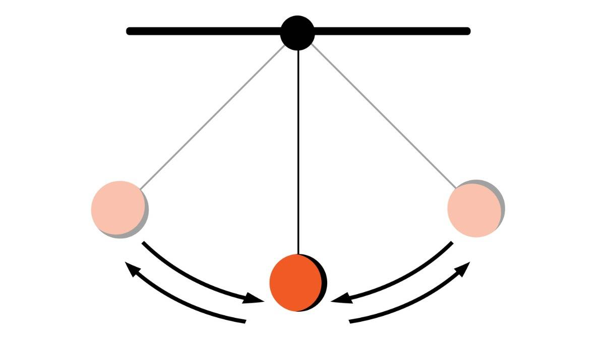
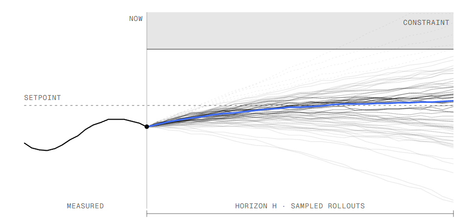

I implement a serial baseline of Model Predictive Path Integral control (MPPI) for a simple pendulum. The model can be changed, but I use a pendulum as a baseline. The pendulum starts from the hanging-down position and the controller must swing it up and stabilize it near the upright position.

At each control step, MPPI samples many random control sequences, simulates the pendulum forward for each sequence, computes a trajectory cost, and updates the nominal control sequence by a cost-weighted average of sampled noise.

This is a realistic robotics control workload with many repeated simulations, which makes it a good target for later parallelization.The implementation is in mppi.cpp and uses only standard
C++17. A more detailed explanation of the algorithm can be found here. I have also tried to comment as
much as I can in the code file itself.
th and angular velocity thd.
th = 0 when upright, and pi when hanging
downu clipped to
[-UMAX, UMAX]DT = 0.02thd += (g*sin(th) - damp*thd + u) * DTth += thd * DT(1 - cos(th)) + 0.01*thd^2 + 0.001*u^210*(1 - cos(th)) + 0.1*thd^2k = 0..K-1, draw Gaussian noise over
horizon T, apply perturbed controls, and accumulate total
cost.lambda.t, compute weighted average noise
and add it to nominal control U[t].U left by one step, and repeat.Command-line parameters: K T steps lambda sigma. Default
values are K=4096, T=100,
steps=600, lambda=1.0,
sigma=1.0.
The code prints periodic diagnostics (theta,
omega, min sampled cost, effective sample size), final
success/failure, and elapsed computation time.
The biggest parallel region is the rollout loop over sampled
trajectories (k). Each sample is independent during
simulation and cost accumulation. <!– - Multicore CPU: - parallelize
the loop over k - each thread computes local costs (and
local weighted sums for control update), then reduce - GPU: - one thread
(or warp) per trajectory rollout - evaluate dynamics and costs in
parallel for all samples - then perform reductions for weights and
weighted noise sums
Potential speedup limits: - memory bandwidth for storing noise/cost
arrays - reduction overhead for normalization and weighted averaging -
serial dependence across outer control steps (steps loop is
receding-horizon and must stay ordered)
Correctness checks: - final state near upright (|theta|
small, |omega| small) - stable behavior across multiple
runs with fixed seed - trend of decreasing minimum sampled cost during
swing-up